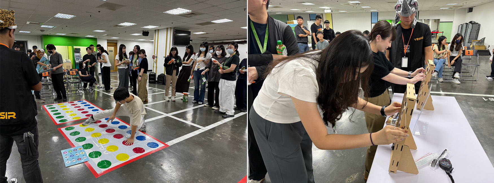

寶編觀察室｜慶生會變賭場？仁寶人的勝負欲藏不住
組織溝通與文化處
一群人聚在一起，手裡拿著紙卡，眼睛緊盯著前方。有人眉頭深鎖，有人嘴裡念念有詞，隨著一個個數字被喊出，現場不時傳來歡呼與嘆息。乍看之下，還以為誤闖了什麼地下賭場。
其實，這是 9、10 月慶生會的 Bingo 遊戲現場。
原本以為只是個輕鬆的小遊戲，沒想到大家玩得格外認真。有人反覆確認手中的號碼，有人明明只差一格，卻怎麼也等不到最後那個數字。最有趣的不是誰最後贏了，而是大家明明知道這只是場遊戲，卻還是不自覺地投入其中。看來，仁寶人的勝負欲不只存在於工作上。
除了靠運氣的 Bingo，這次還安排了兩道需要動點真功夫的闖關遊戲。「蛇麼都要扭」考驗的不只是反應速度，還有身體的柔軟度。短短一分鐘內，得依照題目將四肢擺在指定顏色上，平常看似簡單的動作，實際做起來可沒那麼容易。
另一關「蛇蛋送回窩」則走完全不同的路線。參賽者必須控制力道與方向，讓蛇蛋避開黑洞、順利抵達指定洞口。這回比的不是誰動作快，而是誰能沉得住氣。
從緊盯號碼的 Bingo，到手忙腳亂的闖關遊戲，這次慶生會讓大家暫時放下工作，認真地玩了一個下午。
畢竟，工作需要全力以赴，玩遊戲偶爾也可以。
祝福 9、10 月的壽星們生日快樂！
 |